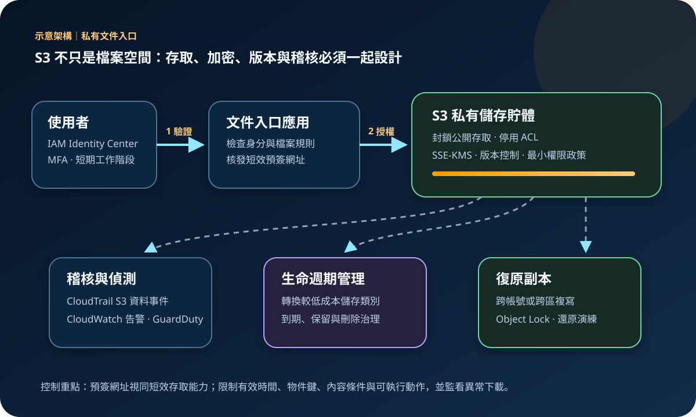

AWS 基礎介紹 03 · 2026-08-24
Amazon S3：物件儲存、存取治理與資料復原
作者：Dr. William｜雲端與資訊安全實務工作者
Amazon Simple Storage Service（Amazon S3）是可透過 API 存取的物件儲存服務。資料以物件形式放入儲存貯體，每個物件由物件鍵識別，適合保存文件、圖片、影音、日誌、資料湖內容、備份與靜態網站資產。S3 提供高度耐久性與多種儲存類別，但資料是否公開、誰能讀寫、保留多久及能否復原，仍取決於客戶設定。
服務定位：S3 解決大量非結構化資料的持久保存與按需存取。它不是傳統區塊磁碟，也不是可直接掛載後執行一般資料庫交易的檔案系統；需要低延遲區塊 I/O、共享 POSIX 語意或複雜交易查詢時，應評估 EBS、EFS 或資料庫服務。
核心概念：從儲存貯體到物件生命週期
- 儲存貯體與區域：儲存貯體是物件容器，建立時選擇 AWS 區域。名稱、區域、政策、封鎖公開存取、版本控制與預設加密都是治理基礎。
- 物件、物件鍵與中繼資料：物件包含資料、鍵及中繼資料。看似資料夾的路徑通常是鍵的前綴；權限與生命週期規則可依前綴或標籤縮小範圍。
- 儲存類別：S3 Standard 適合頻繁存取；Intelligent-Tiering 可依存取模式移動資料；Standard-IA、One Zone-IA 與 Glacier 類別適合不同可用性、取回時間和成本需求。
- 版本控制：啟用後，同一物件鍵的多個版本可以保留，降低覆寫或刪除造成的資料損失；舊版本仍會占用儲存空間，需配合生命週期管理。
- 一致性與並行：S3 對物件寫入與刪除提供強式讀後寫入一致性，但同一物件的並行寫入仍需由應用處理衝突、條件式請求與版本策略。
- 存取控制：身分政策、儲存貯體政策、Access Point、KMS 金鑰政策及服務控制政策可能共同影響結果。新建物件宜採 Bucket owner enforced，停用 ACL 並集中使用政策治理。
適合與不適合的使用情境
適合
- 文件、圖片、影音與軟體套件等大量非結構化內容。
- 資料湖、應用日誌、稽核資料、備份與長期封存。
- 透過 CloudFront 發布的靜態內容，原始儲存貯體維持私有。
- 需要版本、生命週期、跨區複寫或不可變保留控制的資料。
不適合
- 作業系統開機磁碟或需要區塊層隨機讀寫的資料，EBS 更符合介面需求。
- 要求 POSIX 檔案鎖定、目錄語意或多主機傳統共享掛載，應評估 EFS 或 FSx。
- 高頻小型交易、關聯式查詢與就地更新紀錄，應由適當資料庫承擔。
- 把公開讀取當成預設設計，卻沒有資料分類、內容審查與持續監控。
示意故事案例：研究文件交換入口
以下為示意案例，非真實客戶案例。某研究團隊需要讓授權成員上傳大型文件，並保留歷次版本。成員先透過 IAM Identity Center 與 MFA 登入文件入口，應用程式確認專案與檔案條件後，核發有效時間很短且只允許指定物件鍵與上傳動作的預簽網址。瀏覽器直接把文件送入私有 S3 儲存貯體，應用伺服器不必承接整個檔案流量。
儲存貯體啟用封鎖公開存取、Bucket owner enforced、版本控制及 SSE-KMS。生命週期規則將長期未使用版本轉至較低成本類別，並依正式保留政策到期。CloudTrail S3 資料事件記錄物件層操作，CloudWatch 對異常錯誤與流量告警；重要資料複寫至另一個受隔離帳號或區域，並定期執行還原演練。
建置與運作流程
- 分類資料與需求：確認敏感度、資料主權、存取頻率、物件大小、保留年限、RTO 與 RPO，再選擇區域與儲存類別。
- 建立私有儲存貯體：啟用封鎖公開存取與 Bucket owner enforced；只有經核准的靜態網站案例才建立受控公開路徑，優先以 CloudFront 的 Origin Access Control 連至私有來源。
- 設定身分與政策：人員使用 MFA 與短期工作階段，工作負載使用 IAM 角色。政策限定必要動作、儲存貯體、前綴、標籤與條件，不配置長期存取資料。
- 選擇加密：S3 會對新物件套用伺服器端加密；需要客戶控制金鑰、稽核或跨帳號治理時使用 SSE-KMS，並同步設計金鑰政策、輪替與復原權限。
- 管理機密與上傳：應用機密放在 Secrets Manager 或 Parameter Store。預簽網址限制有效時間、方法、物件鍵與必要內容條件，避免被轉傳後擴大使用。
- 建立版本與保留：依資料重要性啟用版本控制、MFA Delete 或 Object Lock；生命週期規則處理非目前版本、不完整分段上傳與依法到期資料。
- 啟用觀測：CloudTrail 管理事件預設可見，但重要儲存貯體另啟用 S3 資料事件；搭配 CloudWatch、AWS Config、Macie 或 GuardDuty S3 Protection 監看暴露、敏感資料與異常行為。
- 設計復原：版本控制不是獨立備份。依威脅模型使用跨帳號或跨區複寫、AWS Backup、Object Lock 與受限刪除權限，並驗證實際還原時間。
成本、可用性與維運考量
- 成本組成：費用可能包含儲存容量、PUT/GET/LIST 等請求、資料取回、生命週期轉換、資料傳輸、複寫、庫存、分析、日誌及 KMS 請求。不能只比較每 GB 單價。
- 儲存類別取捨：低頻與封存類別可能有最低儲存期間、最小計費物件大小、取回費與等待時間。頻繁讀取或大量小物件未必適合最低儲存單價的類別。
- 生命週期：先以 Storage Lens、Inventory 或存取數據確認模式，再自動轉換或刪除。版本控制若沒有非目前版本規則，成本會持續累積。
- 耐久性與可用性：S3 Standard 設計為跨至少三個可用區保存資料，具 99.999999999% 物件耐久性與 99.99% 可用性設計目標；不同儲存類別的可用性、區域韌性與 SLA 不同。
- 區域復原：單一區域內的多可用區保存不等於跨區災難復原。複寫須另外設定、計費並監控；啟用規則前已存在的物件也要規劃批次複寫或其他搬移方法。
S3 特有的資安風險與控制
- 意外公開：儲存貯體政策、Access Point 或 ACL 設錯可能暴露資料。帳號與儲存貯體層啟用 Block Public Access，停用 ACL，並以 IAM Access Analyzer 與 AWS Config 持續檢查外部存取。
- 預簽網址外洩：持有者在有效期內可執行網址允許的動作。縮短期限、限制物件鍵與動作、使用條件式政策，並避免將網址寫入公開日誌或分析平台。
- 過度寬鬆政策：萬用動作與資源會讓遭入侵工作負載大量讀取或刪除資料。依前綴、標籤、來源 VPC Endpoint、組織及 TLS 條件套用最小權限，定期分析未使用權限。
- KMS 權限錯配：可讀取 S3 物件不代表可解密 SSE-KMS 內容；反之，寬鬆金鑰政策也會擴大資料面。同步審查 IAM、儲存貯體及金鑰政策，避免停用或刪除必要金鑰。
- 大量刪除與勒索：版本控制仍可能被具刪除版本權限的身分破壞。分離寫入與永久刪除職責，採 Object Lock、AWS Backup Vault Lock、跨帳號副本與不可變日誌。
- 監控盲點：CloudTrail 管理事件不自動涵蓋所有物件層讀寫。對重要資料啟用資料事件，保護日誌儲存貯體並對政策變更、公開設定與異常下載告警。
- 機密誤放：應用設定、資料匯出或備份可能包含不應散布的敏感內容。機密值由 Secrets Manager 或 Parameter Store 管理，並用 Macie、分類標籤與出站審查降低誤存風險。
共同責任邊界
AWS 負責 S3 所依賴的資料中心、硬體、網路、服務軟體與基礎設施韌性。客戶負責資料分類、區域與儲存類別選擇、IAM 與儲存貯體政策、公開存取、KMS 金鑰治理、應用程式輸入驗證、版本與保留政策、日誌、備份、跨區復原及事件回應。AWS 提供耐久性與安全功能，不會代替客戶判斷哪些資料可公開、哪些版本可刪除或何時必須復原。
上線前可執行檢查清單
- □ 根帳號與高權限身分已啟用 MFA；人員使用 IAM Identity Center 或短期角色。
- □ 帳號與儲存貯體已啟用 Block Public Access，公開需求有書面例外與持續監控。
- □ Bucket owner enforced 已停用 ACL；IAM、儲存貯體、Access Point 與 KMS 政策符合最小權限。
- □ 工作負載不保存長期存取資料；機密由 Secrets Manager 或 Parameter Store 受權取得。
- □ 需要的物件使用 SSE-KMS，金鑰政策、跨帳號與跨區複寫權限已測試。
- □ 預簽網址有效時間、物件鍵、動作與上傳條件受到限制，且不進入公開日誌。
- □ 版本控制、非目前版本生命週期、不完整分段上傳清理及保留政策已設定。
- □ CloudTrail S3 資料事件、CloudWatch 告警、AWS Config 與外部存取分析涵蓋重要儲存貯體。
- □ 跨帳號或跨區副本、不可變保留與永久刪除權限符合 RTO/RPO，還原演練已成功。
- □ 以實際請求、取回與傳輸模式估算成本，並設定 Budgets、標籤與成本異常告警。
AWS 官方一手來源
- Amazon S3 User Guide｜What is Amazon S3?（查閱：2026-08-24）
- Amazon S3 User Guide｜Security best practices（查閱：2026-08-24）
- Amazon S3 User Guide｜Blocking public access（查閱：2026-08-24）
- Amazon S3 User Guide｜Protecting data with server-side encryption（查閱：2026-08-24）
- Amazon S3 User Guide｜Using versioning（查閱：2026-08-24）
- AWS｜Amazon S3 pricing（查閱：2026-08-24）
- AWS｜Shared Responsibility Model（查閱：2026-08-24）
內容說明
本文依查閱日可用的 AWS 官方文件整理，作為基礎學習與架構討論材料；實際部署仍須依區域支援、最新價格、組織政策、法規與風險評估調整。